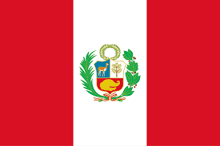

About Me

My name is Raúl and I am from Peru. I am currently studying industrial engineering and enjoy learning about technology and how it connects with modern society. I love exploring new tools that improve productivity and design. In my free time, I enjoy reading, learning programming, and spending time with friends and family.
Huánuco, Peru
Huánuco is a region located in the central highlands of Peru. It is known for its pleasant climate, rich history, and natural beauty. The city is surrounded by mountains and rivers, and is often called the “City with the Best Climate in the World”.
